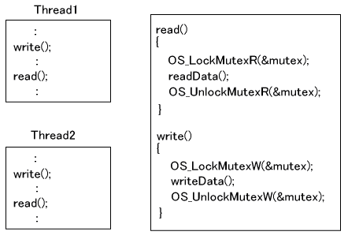

#include <nitro/os.h>void OS_LockMutexR( OSMutex* mutex );void OS_LockMutexW( OSMutex* mutex );| mutex | Pointer to the OSMutex structure |
None.
The calling thread attempts to lock the mutex specified by mutex.
mutex is a pointer to an OSMutex structure.
The OS_LockMutexR function attempts to read-lock the mutex. If mutex is not being used or if it is already set to read-lock by some other arbitrary thread, the function returns immediately. The number of attempts is recorded, and mutex is not released if it has not been unlocked that same number of times. If mutex is set to write-lock or if it is being used in a lock from the OS_LockMutex function, the called thread is paused until mutex has been released.
The OS_LockMutexW attempts to write-lock the mutex. If mutex is not being used or if it is already being retained in the current thread, the function returns immediately. The number of attempts is recorded, and mutex is not released if it has not been unlocked that same number of times. If mutex is set to read-lock, or if it is set to write-lock but is being retained by another thread, or if it is being used in a lock from the OS_LockMutex function, the called thread is paused until mutex has been released.
Note that mutex must be initialized by the OS_InitMutex function. (If the mutex is one that has finished being used in another lock-unlock process, it can be used as is without this initialization process.)
Example
OSMutex myMutex;
// Init mutex
OS_InitMutex(&myMutex);
// read lock
OS_LockMutexR(&myMutex);
:
OS_UnlockMutexR(&myMutex);
// write lock
OS_LockMutexW(&myMutex); <- You can use myMutex because the read lock has finished using it
:
OS_UnlockMutexW(&myMutex);
If mutex has been locked by the OS_LockMutexR function, you should unlock it using the OS_UnlockMutexR or OS_UnlockMutexRW function. You cannot unlock it using the OS_UnlockMutexW function.
If mutex has been locked by the OS_LockMutexW function, you should unlock it using the OS_UnlockMutexW or OS_UnlockMutexRW function. You cannot unlock it using the OS_UnlockMutexR function.
When the thread that is locking mutex is ended by the OS_ExitThread function, that mutex is automatically unlocked.
The change from read lock to write lock is performed using the OS_LockMutexFromRToW and OS_TryLockMutexFromRToW functions. The change from write lock to read lock is performed using the OS_LockMutexFromWToR and OS_TryLockMutexFromWToR functions. With both sets of functions, the transition does not involve a switching of threads.
Consider the following situation.

Say that read is a function that only reads data. Because data is not overwritten, this function can be called from multiple threads simultaneously without any problem. There is also a function named write, which writes data, and because data must not be read while it is being overwritten, nor overwritten while it is being read, write must be locked. The mutex is stopped by the write lock function while it is locked by read, and it is locked by read while it is locked by write. Other threads, however, can enter read when the mutex is locked by read.
Because write is a function that writes data, it would be a problem if other threads could read and write data while write was executing. While a mutex is locked by the write lock function, that same mutex cannot be read-locked, and threads other than its own thread cannot be write-locked. Therefore, during a write lock, other threads cannot execute read and write.
OS_InitMutex
OS_UnlockMutex
OS_TryLockMutex
OS_ExitThread
OS_UnlockMutexR
OS_UnlockMutexW
OS_UnlockMutexRW
OS_TryLockMutexR
OS_TryLockMutexW
OS_LockMutexFromRToW
OS_LockMutexFromWToR
OS_TryLockMutexFromRToW
OS_TryLockMutexFromWToR
2009/03/13 Fixed typos.
2008/12/16 Initial version.
CONFIDENTIAL